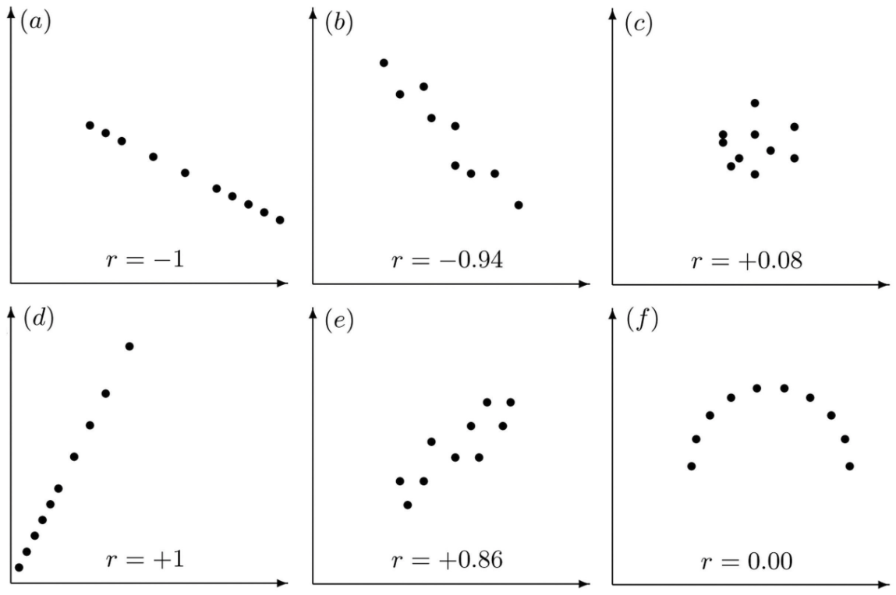
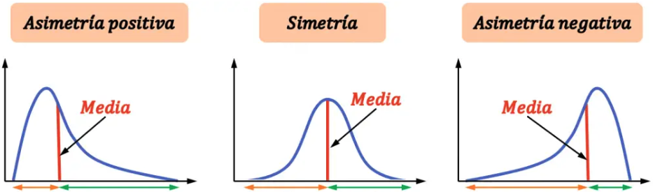

3. Estadísticos principales#
Esperanzas, varianza y ley débil de los grandes números
Variables aleatorias especiales
3.1. Esperanza (media)#
La esperanza o valor esperado o media de una v.a. \(X\) se denota \(E[X]\) y se calcula como: (cambié fx(x) a f(x), usé f(x) para ambos casos)
\(\begin{array}{ll} E[X] = \left\{\begin{array}{ll} \sum_x x P(X=x) = \sum_x x f(x) & si\,X\, discreta\\ \int x f(x)dx & si\,X\, continua\\ \end{array} \right .\\ \end{array}\)
Consideremos \(g\) una función a valores reales, entonces:
\(\begin{array}{lll} E[g(X)] & = & \left\{\begin{array}{ll} \sum_x g(x) P(X=x) = \sum_x g(x) f(x) & si\,X\, discreta\\ \int g(x) f(x)dx & si\,X\, continua\\ \end{array}\right .\\ \end{array}\)
Para el caso especial de \(g(x) = x^n\) se define el n-ésimo momento de X como:
\(\begin{array}{lll} E[X^n] & = & \left\{\begin{array}{ll} \sum_x x^n P(X=x) = \sum_x x^n f(x) & si\,X\, discreta\\ \int x^n f(x)dx & si\,X\, continua\\ \end{array}\right .\\ \end{array}\)
La esperanza es el primer momento y se denota \(\mu\).
Propiedades
Sean \(a,b \in \cal{R}\) entonces:
\(\begin{array}{lll} E[aX+b] & = & aE[X] + b \\ E[X + Y] & = & E[X] + E[Y]\\ \end{array}\)
3.2. Varianza, covarianza y correlación#
La varianza mide la variación de la v.a. entorno a la esperanza o media \(\mu\), y se define como
\(\begin{equation} \begin{array}{ll} Var(X) = E[(X-\mu)^2] = E[X^2] - \mu^2 \end{array} \end{equation}\)
Se cumple que:(Do the proof later)
\(\begin{equation} \begin{array}{ll} Var(aX+b) = a^2 Var(X) \end{array} \end{equation}\)
Se define además la desviación estándar \(\sigma = \sqrt{Var(X)}\)
La covarianza mide la relación (lineal) que hay entre dos v.a. \(X\) e \(Y\). Si denotamos \(\mu_X = E[X]\) y \( \mu_Y= E[Y]\) entonces:
\(\begin{equation} \begin{array}{lll} Cov(X,Y) & = & E[(X-\mu_X)(Y-\mu_y)] \end{array} \end{equation}\)
(Add that variance is the second central moment – why does this concept matter?)
Propiedades
(Do the proof later)
\(\begin{array}{lll} Cov(X,Y) & = & Cov(Y,X) \\ Cov(X,X) & = & Var(X)\\ Cov(X+Z,Y) & = & Cov(X,Y) + Cov(Z,Y)\\ Cov(\sum_i \limits X_i,Y) & = & \sum_i \limits Cov(X_i,Y)\\ Var(X+Y) & = & Var(X) + Var(Y) + 2Cov(X,Y)\\ Var(\sum_i \limits X_i) & = & \sum_i \limits Var(X_i) + \sum_i \limits \sum_{j\neq i} \limits Cov(X_i,X_j) \end{array}\)
La correlación es una medida normalizada de la covarianza que tiene valor entre -1 y 1(cambié Var(x) a \(\sigma\)(x), Corr a \(\rho\)):
\(\begin{equation} \begin{array}{lll} \rho(X,Y) & = & \frac{Cov(X,Y)}{\sigma_x(X) \sigma_y(Y)} \end{array} \end{equation}\)
The above defines the Pearson correlation that measures linear correlation between variables. When it is applied to a population, we usually uses \(\rho\) to denote it; when it is applied to a sample, we usually uses \(r\) to denote it. The following figure shows some examples to help understand how it measures linear correlation. There are other types of correlation that can measure non-linear correlation. See XXX.
{kind=link}
Figure: Examples for Pearson correlation (Source: XXX)
3.3. Otros estadísticos#
3.3.1. Skewness#
Skewness is a measure of symmetry (or more precisely, the lack of symmetry). A distribution, or data set, is symmetric if it looks the same to the left and right of the center point.
\(\begin{array}{lll} \text{ Asimetría (skewness) } & = & E[(\frac{X-\mu}{\sigma})^3] = \frac{E[(X-\mu)^3]}{\sigma^3}\\ \end{array}\)
{kind=link}
Figura: Asimetría (Source: https://www.probabilidadyestadistica.net/asimetria-estadistica/)
3.3.2. Curtosis#
Kurtosis is a measure of whether the data are heavy-tailed or light-tailed. That is, data sets with high kurtosis tend to have heavy tails, or outliers. Data sets with low kurtosis tend to have light tails, or lack of outliers. Some packages used the definition of excessive kurtosis with a subtraction of 3 (which is the kurtosis of a normal distribution).
\(\begin{array}{lll} \text{ Curtosis } & = &E[(\frac{X-\mu}{\sigma})^4] = \frac{E[(X-\mu)^4]}{\sigma^4}\\ \text{ Exceso de curtosis } & = & Curtosis - 3\\ \end{array}\)